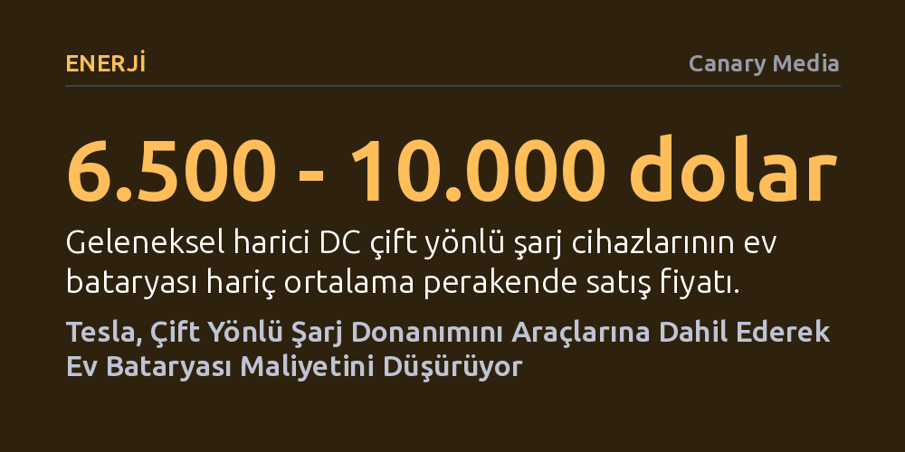

ENERJI · Canary Media · 2026-10-08
Tesla, pahalı harici dönüştürücülere gerek bırakmadan Cybertruck'ın ardından Model 3 ve Model Y'ye de araçtan eve elektrik aktarma kabiliyeti getirdi. Akım dönüştürücüsünün doğrudan otomobile entegre edilmesi, elektrikli araçları acil durum ev bataryasına dönüştürme maliyetini radikal biçimde düşürüyor.
Elektrikli araçları ev bataryası yapmanın önündeki devasa donanım maliyeti bariyerinin, dönüşümün doğrudan aracın içine yerleştirilmesiyle aşılabileceğini gösteriyor.

Evler ve merkezi elektrik şebekesi alternatif akımla (AC) çalışırken, elektrikli otomobillerin bataryaları enerjiyi doğru akım (DC) olarak depolar. Bir elektrikli aracın devasa bir acil durum ev bataryası gibi kullanılabilmesi için bu iki akım türü arasında köprü kurulması zorunludur. Bugüne kadar piyasadaki neredeyse tüm 'araçtan eve' (V2H) sistemleri, doğru akımı evde kullanılabilir alternatif akıma çeviren harici ve oldukça pahalı bir DC çift yönlü şarj cihazının evin duvarına monte edilmesini gerektiriyordu.
Bu harici cihazların yalnızca donanım fiyatı 6.500 ila 10.000 doları buluyor ve bu tutara ev bataryası veya montaj işçiliği dahil değil. General Motors gibi üreticilerin bataryalı komple sistemlerinde toplam maliyet 20.000 dolar seviyesine kadar tırmanabiliyor. Sonuç olarak elektrik kesintilerinde evi günlerce aydınlatma vaadi, fahiş donanım masrafları yüzünden geniş kitleler için pratik bir enerji çözümü olmaktan çıkıp lüks bir yatırıma dönüşüyordu.
Tesla, bu maliyet engelini aşmak için akım dönüştürme donanımını duvardaki bağımsız kutulardan çıkarıp doğrudan otomobilin kendi mimarisine yerleştirdi. Bir elektrikli araç zaten dışarıdan gelen alternatif akımı kendi bataryasına doldurabilmek için dahili bir dönüştürücüye sahip olduğundan, bu mekanizmayı çift yönlü çalıştırmak duvara ayrı bir sistem kurmaktan çok daha ucuza geliyor. Tesla residential enerji yöneticisi Colby Hastings bu adımı, "Bu, tüm ekosistemi bir araya getirmemiz ve ürünlerimizin birbirini tamamlamasını sağlamamız anlamına geliyor" sözleriyle açıklıyor.
Bir yılı aşkın süredir Cybertruck modellerinde bulunan bu AC çift yönlü şarj kabiliyeti, artık yeni Model 3 ve Model Y araçlara da genişletildi. Kullanıcının evinde şirketin Powerwall 3 bataryası bulunuyorsa, bu iki modeli iki ila üç günlük ek yedek güç sağlayacak bir bataryaya dönüştürmek için yalnızca 595 dolarlık standart bir Tesla Wall Connector yeterli oluyor. Cybertruck sahiplerinde ise ev bataryası zorunluluğu dahi yok; yaklaşık 1.990 dolarlık donanım kiti ve montajla araç tek başına evin yedek gücü haline gelebiliyor.
Nissan Leaf ile başlayıp Ford, GM, Kia ve Rivian ile devam eden araçtan eve güç aktarımı yarışında Tesla sahneye biraz geç çıkmış kabul edilebilir. Buna karşın ABD pazarındaki diğer otomobil üreticileri, araç üretim bandına ek maliyet ve mühendislik karmaşıklığı getirdiği gerekçesiyle araç içine gömülü AC çift yönlü dönüştürücü teknolojisini yaygınlaştırmaktan kaçındı. Bu durum da tüketicileri kaçınılmaz olarak binlerce dolarlık harici DC ünitelerine yönlendirdi.
İşin boyutu ev yedeklemesinden çıkıp enerjiyi merkezi şebekeye geri satmaya (V2G) geldiğinde ise mevzuat kısıtları devreye giriyor. ABD'de şu anda yalnızca California ve Maryland eyaletleri pilot projelerin ötesinde AC çift yönlü şebeke bağlantısına yasal zemin sağlamış durumda. Tesla Cybertruck modellerini şimdiden California ve Teksas'taki şebeke destek programlarına dahil etmiş olsa da, Model 3 ve Model Y için öncelikli hedef şebekeye elektrik satmaktan ziyade evleri kesintilere karşı güvenceye almak.
Elektrikli araçların yalnızca birer ulaşım aracı değil, aynı zamanda şebekeyi destekleyen esnek enerji rezervleri olarak konumlanması devasa bir dönüşüm potansiyeli taşıyor. Yapılan bağımsız araştırmalar, 2030'ların ortasında yalnızca California yollarında olması beklenen 9,7 milyon elektrikli aracın yüzde 10'unun dahi şebekeye bağlanmasının, eyaletin tüm enerji depolama hedeflerinin üçte birini tek başına karşılayabileceğini gösteriyor.
Tesla'nın dahili dönüştürücü hamlesi, çift yönlü şarjın yaygınlaşmasındaki en kritik darboğaz olan yüksek ekipman bariyerini kırabilir. Maliyetler düştükçe dağıtık araç bataryaları, hem ev sahiplerinin enerji bağımsızlığını güçlendirecek hem de sanal güç santralleri üzerinden temiz şebeke dengelenmesinde merkezi bir rol oynayacak.